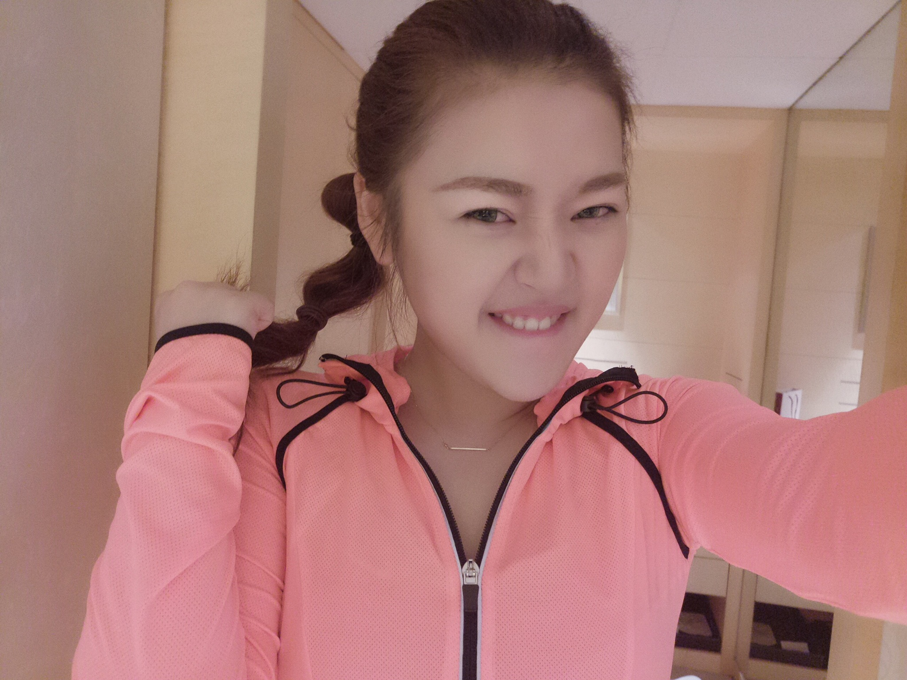

正文:
摘牙套半年多了，我来反馈一下吧！
由于坚持带的缘故，牙齿保持得不错，一点也没有反弹。
一天忘记带那天就跟裸奔了一样浑身不自在，晚上回去再带上的时候前十分钟会觉得牙齿非常紧，所以你们可以感受一下如果不带保持器会分分钟打回原形⋯⋯⋯⋯
黑三角会有啦，不过主要在下牙我觉得影响不大。
甩几张近照⋯⋯

2016.4.16
针对问的最多的问题统一回答一下吧！
- 状况咨询：我所传达的都是个人情况，只针对我本人，供参考。但任何经验都是非常私人的，造成最后结果的原因有千千万，不能一概而论。故原谅我无法针对某个我不了解的你给出很详细的建议，因为感谢大家的支持和信任，所以我更需要为大家负责，虽然可能跟我半毛钱关系也没有。请见谅！具体方案还请挪动你的腿，多去咨询下医生就有结论了，这也是最有效的方法。
- 治疗价格：正畸的价格和周期也是上述这个道理。不同城市价格不同。一般一线城市较贵，在北京的话私立会更贵些，如果材料选用透明的或者隐适美这种会更贵。公立医院比较划算，但不好排上。普遍需要1-2万。二三线城市几千一般能搞定。
- 医生选择：方案基本上都是医生定的。你拔不拔牙，最后治疗成什么样都是看医生审美。最好选择有很多年经验的医生，他们对于各种状况会很清楚；医院当然是越正规约好。一线城市有更好的选择就是私立口腔医院。但还需多观察比较和参考。在这里不做推荐。我本人是开始在北京私立，后来回家在公立医院做的。可能因为我心比较大，并没做什么筛选就满脑门去了。因为这项技术很发达，我也没啥顾虑。
- 牙套脸：我只有前期不适用的时候有牙套脸，但是因为本人胃口很好，而且不怕痛，所以很快就恢复了。很多妹子带牙套以后蹭蹭掉体重我好像也没有。。。等适应了还是该吃吃该喝喝。只能说颧骨很高，脸非常瘦的妹子们多考虑一下，去医院咨询方案再定夺。再次重申：想靠带牙套完美脸型的风险太大！！！另外，我现在并没有牙套脸。
- 关于双眼皮这件事……我不是不愿意讲，也是状况非常私人。每个医生拿到每个患者能出的效果一定是不同的。因为我了解自己的状况，我知道即使自己换一家医院，根据我和医生交流后出来的效果一定也没什么差别（好吧我还是心太大。。）因为我知道自己适合什么样的。我不喜欢又宽又双的眼皮，只希望眼皮脂肪没那么厚，稍稍有那么一点宽度就行了。照片里面其实还在肿，我希望还能消消消！我也没开眼角，就是眼型适合啊…摊手…所以，还是请咨询！（感觉双眼皮好像也能写个回答。。。但我已经不想再出卖自己色相了！> <）忘说了，我在北京小忠丽格做的。其实真心的，只要医生技术Ok,哪都没啥大差别。。
- 关于说啥只靠照片ps啦，化妆啦balabala的~~我只想说，如果你觉得这么说你能瘦十斤，能白三度，能美过天仙。请随意……
以下是原答案~~~~~~~~~~~~~~~~
谢
@Kingfisher邀，那我就硬答了。
因为我23带的牙套，今年摘掉，带了足足两年半，现在保持器中。也算是打了25岁的擦边球。
关于带牙套我有太多辛酸泪可以说。这其中的种种痛苦只有真正下定决心改变的人才能承受的了。所以虽然我自己的效果很好，但
依然希望心动的朋友多研究多考虑再行动，后面会慢慢道来。
先来个对比图呗~
是不是下半张脸都不一样了……
其实我在12岁的时候已经开始显露龅牙的痕迹，母上大人英明且强硬地逼我去带了牙套。那个时候技术条件不太好，只记得吃了很多苦头，小孩子不懂事，医生叮嘱不能硬啃的东西我也照样来，结果每次复诊都掉几个托槽被医生骂的狗血淋头。带保持器正赶上初一，以前带在舌侧的保持器跟假牙一样讲话非常不方便，害怕被新同学认为我口齿不清就丢弃了，结果牙齿华丽丽全回去了……
从此种正畸成为我人生不能启齿的痛……
后来小龅牙自认没有太大影响美观，也听朋友们的洗脑说“小兔牙多可爱”，于是自我感觉一直很良好，还不时秀一下。。。
现在看这门牙真是翻到天上去了……
真正想到重新矫正也是因为一次偶然机会，一个男同事当面开玩笑吐槽我的牙太突不好看（现在想来真是要感谢这个嘴贱的处女座男人！），于是羞耻心爆棚的我突然意识到，牙丑就算再瘦化再美的妆都掩盖不了嘴型和下半张脸（此处请参照凤姐和囧令姐姐），于是我重新燃起了回炉重造的决心。
因为带过一次牙套的原因，我知道整个过程的煎熬，但当时的想法很纯粹，就觉得很多事情再不做就来不及了。跟很多人一样，20多岁了最担心的就是时间对不对。工作，谈恋爱，甚至要结婚，想想女生最美好的年华，两年多的时间都要忍受“牙套妹”的束缚，的确很难决定。我也是个有点轴的人，觉得没有其他办法能改善了，还安慰自己说
反正两年都要过，丑个两年但是美一辈子啊，想想这笔账我是划算的啊！做好了心理建设我就去找医生了。
当时我在北京，没多做比较就直接选了一个离家近的私营口腔医院。后来也有妹子们陆续问我到底怎么选。其实正畸技术在国内已经相当成熟，只要医生经验丰富，医院设备不落后，在承受范围内选最好材质的牙套，问题都不大。这个跟整形医生感觉略像，也看医生的审美。比如我后半段的矫正在老家的医院完成，就能明显感受到两个医生的治疗手法略不同，一个牙收的比较内凹，一个就刚好，害的我又多花了两个月把过于内收的牙掰回去一点。。。
由于我是龅牙，为了给回收的牙齿留存空间，必须拔牙（12岁那年没拔）。插播：龅牙通常分骨性和牙性前突。骨性矫正难度较大，太严重的话甚至需通过打开牙槽骨调整牙和颌关系的手术，改变咬合，才能彻底改观；牙性就很好办了，牙套基本上是能矫正回来的。
医院首先给我拍了X片，确定我是略带骨性的前突。其实当时心里很郁闷觉得应该很难有好效果了，但想着做肯定比不做好，于是咬着牙（咦？）拔了上下各两颗好牙。
现在这四颗牙还被我收着呢哈哈~我爹吐槽我可以拿来辟邪了……
刚上牙套会很不舒服，整张嘴跟带上紧箍咒一样不得劲。要命的是本来就突的嘴更突了！当时我选的是最简单的托槽，连自锁的都不如。再加上我的口腔排异反应很明显，有过经验的我虽然知道一定会磨破嘴后沸腾起口腔溃疡，但没想到第一次来的如此猛烈！
第一天带上还兴奋还卖萌对不对，呵呵，过俩周，好日子就来了……
口腔内壁被磨破后无法抑制地在各处生出口腔溃疡，药物对我来说一点用都没有。6个巨大的创口在嘴里喉咙边，别提吃饭了，我连嘴动一下都扯着疼。那个月脸迅速开始变形走样。也就是传说中的“牙套脸”时期。
算是正畸初期，只找到这两张了，拍的不明显。但当时脸颊、太阳穴迅速呈凹陷趋势（当时脸肉多所以看着还是肉。。），整个人也很没神。大多数人矫正瘦得最多就是这个时期。所以此刻我想说：
单纯希望依靠带牙套修正脸型的我表示非常不赞同，很可能得不偿失！！！虽然很多人在矫正后期会慢慢恢复脸型，但是我也看到不少本身就脸瘦，太阳穴不饱满的姑娘因为实在无法接受过重的牙套脸中途放弃了。脸型跟很多原因有关，不做判断只寄希望于改变可能没大问题的牙齿来变尖脸的，我敬你是个勇士！！
矫正渐入正轨后，慢慢就没有第一个月那么痛苦了，但过程依然不轻松。总结一下：
- 每一到两个月复诊一次的时期跟大姨妈来的镇痛一样会那么不舒爽几天。钢丝会进一步收紧，所以前几天几乎无法用力，只能靠松软的食物度过。这几日也是容易心理脆弱的时候，连吃饭都成问题。但坚持熬过去，牙齿的适应力非常强，3天下来慢慢就习惯了。
- 与此时期更让我崩溃的是口腔溃疡。有的人反应不明显，很不幸我是反例。药物对我来说几乎没作用，只能眼睁睁掰指头数着日子等它自己消下去。（一般西瓜霜、意可贴还是管用的，可我不是一般人。。）当然，还是可以推荐几个神器：
- 这种药上完会非常之爽！爽到流泪T T 但是对于伤口有很好的临时麻痹效果，适合吃饭前使用。
- 矫正顺序主要为：排齐所有牙齿（相对容易，半年到一年）——收缝隙（往往伴有皮筋及打支抗钉）——末期调整咬合，再次收缝。
- 比较痛苦的是打支抗钉这个环节。这个根据各人情况而定，具体咨询医生。很不幸的我又在这里栽了大跟头。所谓支抗钉是正畸时为了使牙齿往一个方向挪动，必然需要借力，可以简单理解成站在拔河队伍里的最后一个壮汉。这个钉子一般都打在颌骨的位置。
不好意思，恶心一下大家。看到右上方的冒头的钉子么？其实大概有一公分长……脑补一下吧！我也是抱着就义的心情钉上的。其实麻药会痛以外也没太大感觉，但是听着声音加想象还是略恐怖，就是电钻钻进骨头的感觉。全过程不长，麻药退了会痛，但在忍受范围内。我比较惨的是打了两边，但一边的钉子打歪了，一周后牙龈肉长起来了把钉子包在里面……于是只能把钉子拔出来再过两周，等牙龈长好然后默默又赴死了一次……
就这样颠来倒去的折腾，我的牙齿与嘴型开始好转。没有很全的各个时期照片，尽力比对一下吧（全过程为2013年6月-2016年11月）：
自从今年十月摘掉牙套，我开始了带保持器的日子。这又是一场持久战，有了之前的惨痛历史，现在保持器对我来说就是他在我在，他亡我亡一样的地位！医嘱第一年全天除吃饭摘掉外24小时带，第二年睡觉带。但带了牙套以后我对牙齿的重视与护理程度已今非昔比，知道都是血泪换来的，格外珍惜。人一生牙齿变动的可能性非常大，要想保持好就要不怕麻烦，所以我决定延迟带保持器的时间，并作好了下半辈子时不时带他的准备。
麻烦么？超级麻烦，吃饭小心翼翼地趁人不注意摘下来，每晚睡觉前除了刷牙还要刷一副这货也是够够的了。但是我觉得很值得。发达国家普遍对牙齿的重视观念强于我国，这种麻烦事换来的却是一张自信的笑容，整个人都干净气质了好多呢！
嘻嘻，那我就po一下现在的照片（以下均带了透明保持器）
像我这么无私扒自己黑历史的人，请各位
且看且珍惜。。。。
翻了一晚上照片，决定把这个过程写出来也算是对两年半牙套日子的回忆吧！还是那句话，想不想做，值不值得，自己权衡吧。通常说的年龄大例如牙齿松动等问题在我这并没有；相反，20多岁矫正最大的好处是你会更能自控，也更珍惜所付出的辛劳。咳咳，关于自控可以移驾
长时间坚持健身可以一定程度上改变容貌吗？ - 妙手小菩萨的回答（好硬的广告。。。）
终极建议就是：如果想改善，就多咨询医生和过来人，尽快实施；如果觉得不值也大可不必勉强，不要心里一直惦记让自己不开心就好。希望能给各位想要矫正牙齿的朋友一点信心，加油咯！